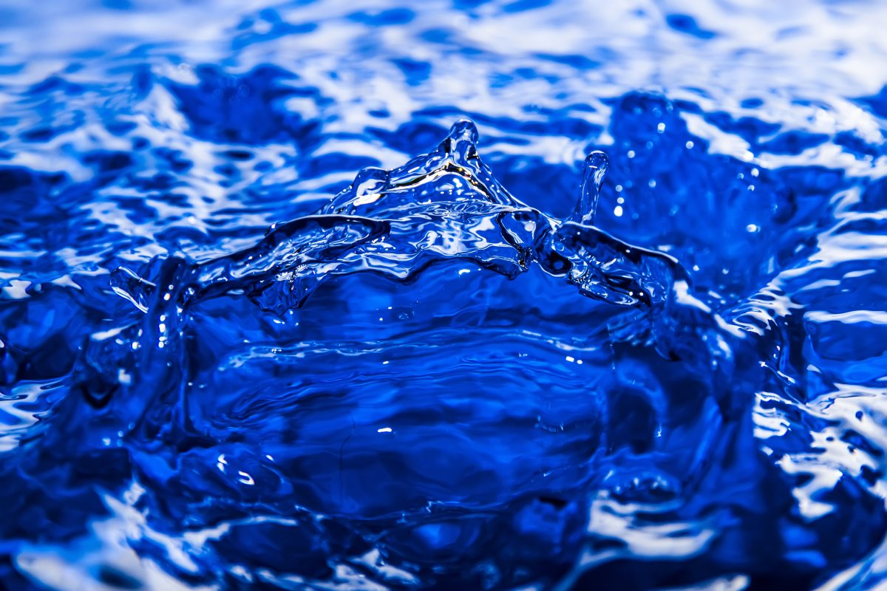

Всем известно, что вода хорошо проводит электрический ток. По этой причине,например,
нельзя купаться в грозу, нельзя мокрыми руками работать с электроприборами и так далее.
Но проводит ли вода ток на самом деле?
На самом деле ток проводит не вода, т.е. не молекулы воды, а различные примеси,
содержащиеся в ней, в частности ионы различных минеральных солей. Вода отличный
растворитель, поэтому в природе в воде всегда растворено много различных примесей,
которые приводят к тому, что вода в натуральном своем состоянии на Земле всегда
проводит ток.
Но современные технологии, при необходимости, позволяют полностью очистить воду от
всех примесей, оставив в ней только молекулы самой воды. Вода, очищенная от примесей,
называется дистиллированной. Так вот дистиллированная вода электрический ток
почти не проводит, а вместо этого является хорошим диэлектриком. Дистиллированная
вода имеет широкое применение в технике, медицине и промышленности и вырабатывается в
больших количествах. Её даже можно купить в автомагазинах и аптеках.
Однако не стоит слишком сильно полагаться на то, что вода очищена и поэтому не должна
проводить ток. Дело в том, что дистиллированная вода требует особого обращения, иначе
она очень быстро снова растворит в себе множество примесей и снова станет проводником.
Так в быту Вам не удастся слишком долго сохранять воду настолько чистой, чтобы она не
проводила ток.
Всё это означает, что меры безопасности при работе с электрическими приборами и устройствами
по-прежнему нельзя нарушать. Помните, что та вода, которую Вы можете встретить в обычной жизни,
всегда обладает примесями и потому является хорошим проводником электрического тока.
-
Придерживайтесь обязательных мер при работе с электричеством!!!
- Обязательно одеть резиновые перчатки
- Не хватся за оголенные провода
- Самостоятельно не проводить опыты с электричеством, только в присутствии специалиста